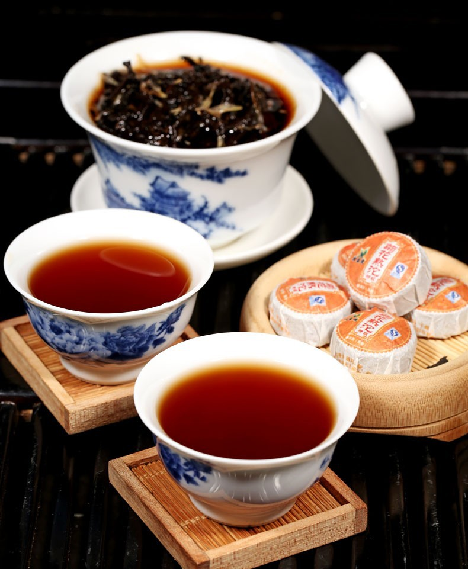
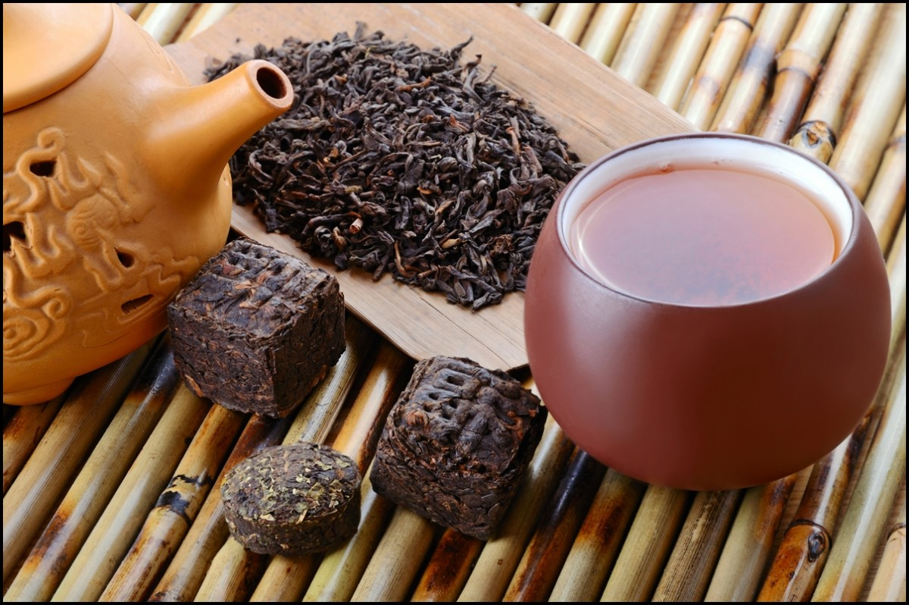
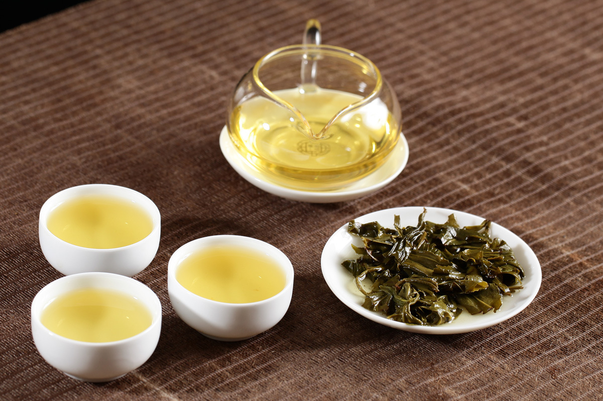
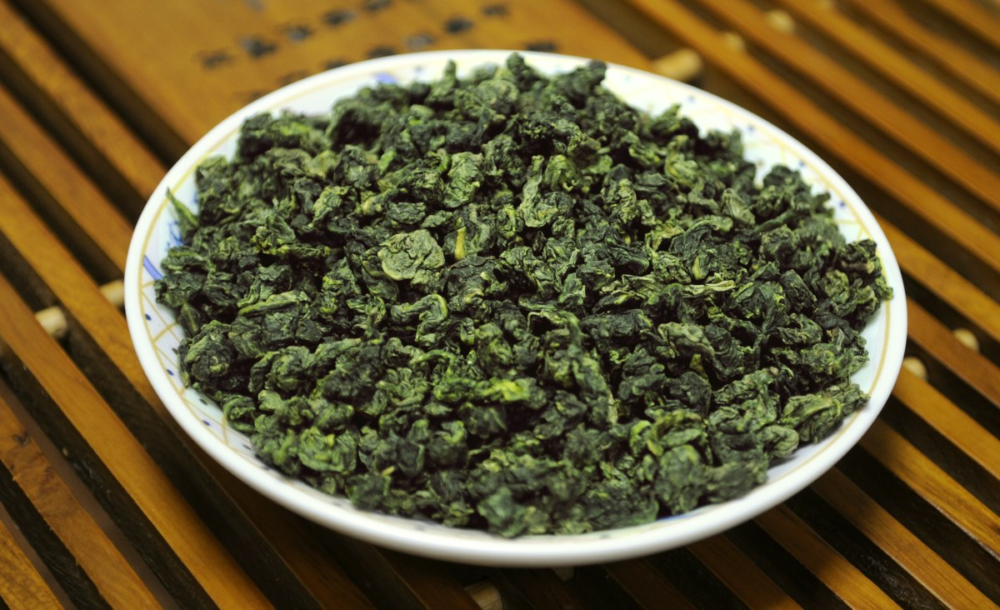

1.Чай Пуэр
Родиной пуэра является довольно крупная территория на восточной границе Тибетского нагорья, которая в древности называлась Башу, позже ставшая царством Шу, а затем входившая в территорию средневековых государств Наньчжао и Дали (сегодня это китайские провинции Юньнань, Сычуань, Гуйчжоу, а также северные территории Бирмы, Вьетнама и Лаоса).
Со временем весь чай, сделанный из сырья с крупнолистового юньнаньского чайного дерева, стали называть «пуэрским чаем» (кит. 普耳茶, буквально: «чай из Пуэр»), или сокращённо «чай Пу» (кит. 普茶, буквально: «пу ча»).
Название этого сорта чая предположительно связано с древним народом пу, потомками которого, по мнению авторитетного советского этнографа Р. Ф. Итса, является мон-кхмерская народность буланов[4], населяющая уезд Мэнхай Сишуанбаньна-Дайского автономного округа провинции Юньнань, представители которой специализируются на производстве элитных сортов пуэра.
Это название стало широко известно в Китае и за его пределами, чай приобрёл большую популярность у жителей Тибета, Сикана, Синьцзяна и других районов, основу рациона жителей которых составляет мясо.
Название «пу ча» сохранялось вплоть до последнего года существования империи Мин, когда чай стал называться так, как называется сейчас — пуэр.
Спорным вопросом является влияние возраста пуэра на его вкусовые качества. Часто можно встретить заявления продавцов о том, что пуэр со временем только улучшается во вкусе. В реальности это зависит от технологии его производства. Шен пуэры отличаются тем, что можно самостоятельно контролировать степень ферментации, и, соответственно, вкус чая. Этот процесс требует значительного времени: через 2—3 года хранения из чая начинает уходить горечь и грубость свежего листа. Уникальным же, по мнению знатоков, чай становится по истечении 10—20 лет (при условии правильного хранения). Шу пуэры при длительном хранении мало меняются, так как технология их производства предполагает быструю ферментацию с последующей её остановкой без стадии дозревания. Есть мнение, что со временем из шу пуэров уходит так называемый «вкус и запах мокрых куч», что улучшает их характеристики.
Шу Пуэр не рекомендуют пить вечером, если вы не планируете бодрствовать целую ночь. Слабым чаем в небольшом количестве можно побаловать себя за несколько часов до сна. Он способен успокоить нервы, помогает быстрее уснуть.
переходи на этот сайт и узнай как создается чай пуэр2.Си Ху Лун Цзин
Си Ху Лун Цзин, ( иногда его называют «чай Двух Гор»), многие считают самым лучшим чаем. О необычайной его популярности свидетельствует тот факт, что для производства Лун Цзина китайские чаеводы вывели 43 вида чайных кустов.

Он изготовляется в провинции Ханчжоу, в горах у озера Си Ху (Западное озеро) и имеет очень долгую историю. Ещё в эпоху Тан поэт Лу Юй в каноне «Ча цзин» писал о монастырях Тяньлань и Линъинь, где делали этот чай. В эпоху Сун родственный чай делали в гротах Тяньланя и Сянлиня, в гроте Баоюндунь, а также на пике Байюнь, около нижнего Тяньланя.
Считается идеальным сочетание Лун Цзина с водой из источника Хупао (Присевший тигр). «Когда к хорошему чаю прибавить хорошую воду, ещё более красивым становится озеро Сиху», — писал сунский поэт Су Дунпо. Окрестности озера и источник посещается множеством людей.
В своих стихах Су Дунпо не обошёл вниманием чудесный зелёный чай, собираемый весной, в период Хлебных Дождей около пика Байюнь. Знаменитая «Ода чаю» («Жо инь») также содержит упоминание о Лун Цзине: «на Западном озере есть чай под названием «Колодец Дракона». Там пики Южных гор встречают туманные зори, и летят водопады в тёмные ущелья, и камни растут».
Гао Цянь в энциклопедии «Цзун шэнь бан цзянь» эпохи Мин писал следующие: «В Ханчжоу делается чай Лун Хун Ча. Воистину, и на небесах не найти лучшего». До 1700 г. источник Лунцзин рядом с одноимённым монастырём (Колодец Дракона) назывался Лунху. По преданию, в эпоху Мин (1368-1644 гг.), в годы правления Чжэн Гэна там был вырыт колодец, из которого достали камень, похожий на плывущего дракона.Колодец Дракона Отсюда чай получил своё название. Записи эпохи Мин говорят о прекрасной воде Драконова Колодца, имевшего необычно холодные стены.

Существует 13 сортов Лун Цзина. Высшая степень — от первого до третьего. От четвёртого до шестого – средняя. Лун Цзин седьмого и восьмого сорта считается уже низкосортным. Когда-то существовали девятый и десятый сорта, которые в настоящее время уже не производится.
Различие сортности обусловлено, в частности, температурой котла. Чем она выше, тем больше количество листьев, которые, следовательно, нужно давить сильнее.
Качественный Лун Цзин легко испортить, храня его при высокой влажности. Поэтому необходимо вовремя завернуть его в бумагу: обычно по полкилограмма в один пакет. Пакеты перекладываются пеплом, известью, и помещаются в плотно закрывающиеся кувшины. Тогда через полмесяца или месяц чай становится ещё ароматнее, а вкус – ещё свежее и приятнее. И через год такой чай сохранит свой цвет, особенный аромат и удивительный вкус.
больше информации здесь3. Да Хун Пао
В переводе с китайского 大红袍 [Dàhóng páo] значит «Большой Красный Халат», утёсный китайский чай, который производят на северо-западе провинции Фуцзянь, в горах Уи. По классу его относят к улунам средней ферментации или полуферментированным улунам.

Родина – уишаньские утесы...
В долинах гор Уишань выращивают лучшие чайные сорта Поднебесной. Это связано с тем, что из глинистой плодородной кислой почвы кусты камелии получают ценные микроэлементы, а листы вбирают в себя густой облачный туман, который постоянно покрывает горные хребты. Утесные плантации раскинулись на высоте 500-700 м над уровнем моря, тогда как наивысшая точка Уи достигает 2158 метров. Кустарники расположились в зонах, где протекают ручьи – высокая влажность благотворно влияет на качество сырья, которое в Китае считается эталонным.
Легенды
Китайцы, большие любители преданий и сказаний, не могли обойти стороной и легендарное происхождение Большого Красного халата.
Самой известной историей является рассказ о студенте, который отправлялся на сдачу экзаменов для поступления на службу во дворец. В тяжелом пути под солнцем он почувствовал недомогание, а добравшись до города и вовсе слег с тепловым ударом. На помощь ему пришли монахи из ближайшего монастыря, которые напоили молодого человека целебным напитком. Парень быстро поправился, успешно прошел императорское испытание и, конечно, захотел отблагодарить своего спасителя. В качестве дара он преподнес новому знакомому дорогой красный халат с вышитым на нем драконом, но тот отказался от подарка. Тогда юноша накрыл полотном те самые кусты, листки которого излечили его от болезни.
Есть и другая легенда о чудесных свойствах чая Дахунпао. Она связана с матерью китайского императора династии Мин, которая внезапно тяжело заболела. Ничто не помогало вернуть ее к жизни, с каждым днем состояние только ухудшалось. До тех пор, пока за лечение не взялся купец, торгующий разными сортами чайных листьев: он сделал настой из особых растений и напоил им женщину. Когда она пришла в себя, правитель приказал украсить чудодейственные деревца красными накидками и охранять их. Долго напиток был доступен только вельможам и императорской семье.
Вкус Да Хун Пао настолько неповторим, что порой сложно поверить, как его происхождение может быть связано с обычными людьми. Возможно, поэтому появилась история о волшебных обезьянках в алых бархатных халатах, которые не покладая рук трудятся в горах Уи и собирают драгоценные листочки.
Как делают улун Да Хун Пао
Весь цикл производства состоит из шести этапов, не считая фасовки.
Первый этап: сбор
Листья собирают всего раз в году, в начале мая. Для создания Да Хун Пао используются только первые 4 листочка, которые считаются самыми полезными и ароматными. Они проходят тщательный отбор, поскольку этот вид чая не допускает второсортного сырья с повреждениями и дефектами.
Второй этап: подвяливание
Листья тонким слоем раскладывают на специальных поддонах и на несколько часов оставляют на открытом воздухе или в помещении с хорошей вентиляцией. В результате этого они должны утратить часть влаги и стать мягкими.
Третий этап: ферментация
Мягкие, чуть увядшие листья бережно сминают (вручную или с использованием специальной техники) до тех пор, пока из них не начнет выделяться сок. В этот момент кислород попадает в ткани листа и начинается процесс окисления, то есть ферментации. Смятые листья оставляют ферментироваться еще на несколько часов. Листья, которые ферментируются вручную, как правило, оцениваются дороже.
Четвертый этап: обжарка
Когда ферментация доходит до нужной стадии (до 50%), листья на несколько минут помещают в обжарочный шкаф. Там ферментация останавливается за счет тепла.
Пятый этап: скручивание
На этом этапе листья отделяют от стеблей (если это не было сделано ранее), придают им красивую скрученную форму и создают купажи. Монокупаж обойдется вам дороже, чем смесь из листьев, собранных в нескольких разных местах.
Шестой этап: окончательная сушка
Аккуратно скрученные чайные листья размещают в специальных корзинах и подсушивают на углях при низких температурах, после чего их остается только расфасовать по упаковкам.
4.Билочунь
История чая Билочунь
Билочунь имеет поэтичное название, которое переводится на русский язык как «Изумрудные спирали весны». Сложно установить точное происхождение этого возвышенного названия, однако по этому поводу существуют китайские легенды.
По одной из версий этот чай, который производился много веков в одной из китайских провинций, ранее имел другое название – Ся Ша Жень Сян, что примерно переводится как «убийственно ароматный». Это грубоватое название в полной мере соотносится с качественно приготовленным Билочунем, поскольку он имеет потрясающий, ни с чем не сравнимый аромат.
Далее легенда гласит, что в конце 17 века чай попробовал император Кан Си, проезжая по стране и остановившись на озере Тай Ху. Император был очень доволен этим напитком, однако название показалось ему непристойным и неблагозвучным, поэтому он решил назвать его иначе.
Вкусовые качества
Сложно сказать, чем пахнут спиральки чайных листьев Билочунь, поскольку они имеют слишком многосоставной аромат даже в сухом виде. Однако точно можно заключить, что в его аромате присутствуют явные фруктовые ноты, в основном, персиковые.
Цвет напитка зависит от времени сбора. Более поздний чай или сорт, собранный в другой провинции, имеет действительно изумрудный оттенок. Настоящий Билочунь, собранный ранней весной, будет прозрачным, светло-зеленым, при этом обладая сильным и ярким ароматом.
Хотите узнать больше информации здесьИ последним чаем в нашем списке будет
5.Те Гуаньинь
ЧТО ТАКОЕ ТЕ ГУАНЬ ИНЬ?
Сорт относят к группе улунов (оолонгов), крупнолистовых полуферментированных китайских чаев, традиционно занимающих место между красными (в нашем понимании черными) и зелеными. Он считается бирюзовым или сине-зеленым, широко распространен и популярен на родине и за ее пределами.
Тегуаньинь производят на юге региона Фуцзянь в уезде Аньси, именно там выращивают чайный куст, мясистые листья которого идеально подходят в качестве сырья для создания оолонга. Урожай собирают 4 раза в год: весенний считается самым ароматным, а осенний – многогранным по вкусовым композициям. Так же большое влияние на вкус имеет высота произрастания чайного куста – чем выше, тем интереснее напиток.
Легенда о чаеводе по имени Вэй Цинь...
У вышеозначенной богини Гуаньинь трудился садовник, который каждое утро и вечер готовил ей ровно по три чашки зеленого ароматного питья. Продолжалось так не меньше 10 лет, пока Вэй Цинь однажды не увидел сон. В нем он распознал странный куст или дерево, растущее на склоне высокой горы. Мужчина вскочил поутру, одержимый идеей во что бы то ни стало взобраться по крутому склону и добыть деревце. Вскоре он смог его найти, срезать черенок и посадить у своей хижины в железный горшок.
Когда растение выросло, окрепло, садовник срезал сочные листья, высушил их и заварил необычный чай, который в самое сердце поразил божество. Напиток так понравился Гуаньинь, что больше она никогда не упускала возможности поутру насладиться им. Вэй же стал всех угощать новинкой, заодно рассуждая, как ее назвать. Один школьный учитель, попробовав улун и услышав его странную историю, предложил то самое имя, которое известно в наши дни, – в честь богини и железного горшка, где выросло дерево.
Свойства чая Улун Те Гуань Инь: польза и вред
Питье содержит в избытке полезные вещества, микроэлементы, минералы и витамины:
- ретинол;
- токоферол;
- железо;
- йод;
- многие витамины группы B и C;
- селен;
- фосфор;
- рутин;
- марганец.
Благодаря составу, он обладает рядом полезных качеств и способен оказывать разностороннее влияние на человека:
- Помогает очистить организм от токсинов и шлаков.
- Способствует нормализации артериального давления.
- Положительно влияет на здоровье десен, укрепляет зубную эмаль.
- Разглаживает, увлажняет и питает кожу.
- Поддерживает состояние иммунной системы.
- Подстегивает метаболизм и помогает быстрее снизить избыточную массу.
Китайские медики утверждают, что все компоненты в комплексе блокируют окислительные процессы, являясь природными антиоксидантами. Это предотвращает преждевременное отмирание клеток, следовательно, отдаляется старение.
В заключении хочу сказать, что это был мой топ лучших и популярных чаев Китая. Если вам приглянулся какой-либо из них, то вы сможете преобести их на OZON-е по ссылке ниже.
ссылка для покупки здесь!